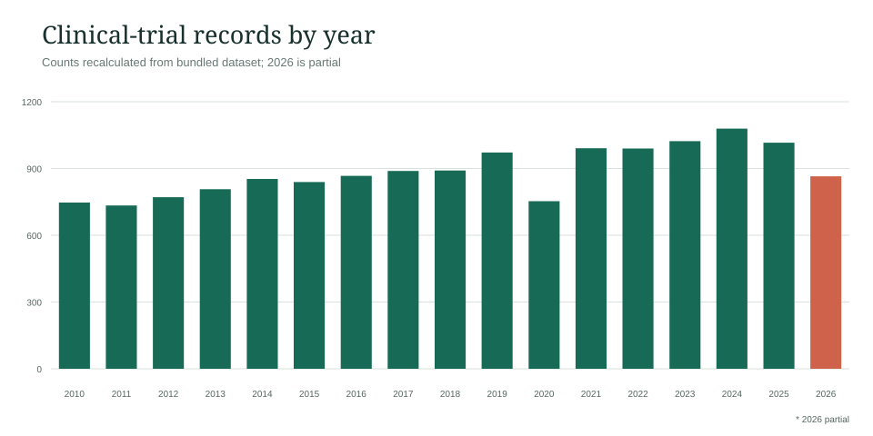
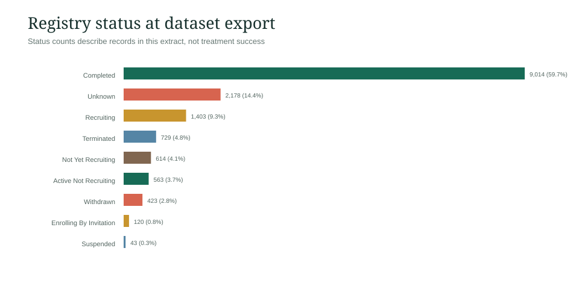
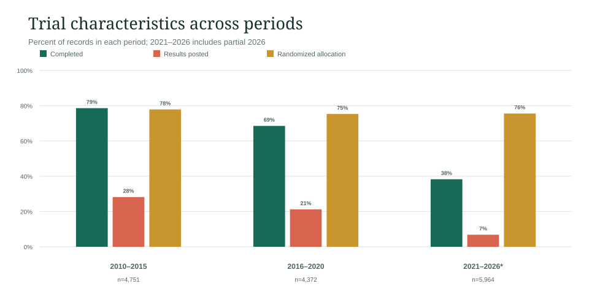

Childhood cancer is not one disease and does not have one prognosis. Age, cancer type, biology, risk group, and treatment response all matter. Population statistics can help frame questions, but they cannot tell a family exactly what will happen.
A separate dataset: diabetes clinical trials
Dataset analysisImportant scope note: The CSV found in Downloads is about diabetes clinical-trial registrations, not childhood cancer. These charts are kept separate from the cancer evidence and do not support conclusions about cancer.
The supplied extract contains 15,087 records from 2010–2026. Annual and period totals recomputed from the trial-level file match the companion summary CSVs. A simple search of each title and condition finds “diabet” in 95.2% of rows; 726 rows lack that keyword and include unrelated or comparator conditions, so the extract is not a clean, fully specific diabetes cohort.



Narrative: 9,014 records are marked completed, while 2,675 carry a results-posted flag. The completed share falls from 78.6% in 2010–2015 to 68.5% in 2016–2020 and 38.3% in 2021–2026 (partial). This pattern is expected to be affected by follow-up time: recent studies may still be recruiting or awaiting completion and results. It should not be read as worsening study performance. The extract’s original query, export time, and inclusion rules were not provided, so these counts are exploratory rather than a complete registry census.
Records are registrations, not unique participants or published findings. “Results posted” does not indicate result quality or direction. Analysis is descriptive and cannot establish treatment efficacy or causation.
What the numbers can—and cannot—say
01The National Cancer Institute estimated 14,910 new cancer diagnoses and 1,590 cancer deaths among people ages 0–19 in the United States in 2024. These are estimates for that year, not a final registry count [1].
NCI reports five-year survival by age for people diagnosed from 2013–2019. Rates range from 83.2% for infants younger than one year to 87.8% for ages 1–4; the estimates are 85.7% for ages 5–9, 85.5% for ages 10–14, and 87.3% for ages 15–19 [1].
| Age at diagnosis | Five-year survival estimate | Data period |
|---|---|---|
| Under 1 year | 83.2% | 2013–2019 [1] |
| 1–4 years | 87.8% | 2013–2019 [1] |
| 5–9 years | 85.7% | 2013–2019 [1] |
| 10–14 years | 85.5% | 2013–2019 [1] |
| 15–19 years | 87.3% | 2013–2019 [1] |
A five-year survival rate describes a group of people diagnosed in the past. It is not the chance for a particular child and may not reflect the newest treatments [1, 2].
Leukemia: one name, different diseases
02American Cancer Society materials describe approximate overall five-year survival estimates of about 90% for childhood acute lymphoblastic leukemia (ALL), 65–70% for acute myeloid leukemia (AML), and more than 92% for chronic myeloid leukemia (CML) [2]. These figures are broad historical estimates, not current personalized predictions.
Prognosis can vary with age at diagnosis, initial white blood cell count, leukemia subtype, genetic features, risk group, and how the disease responds to treatment [2]. Ask the pediatric oncology team which factors apply to the child and what time period a statistic represents.
Genetics, family history & exposures
03Inherited risk is not the whole story
A genetic change in a cancer is not necessarily inherited from a parent. NCI estimates inherited pathogenic variants in cancer-predisposition genes account for about 8–10% of childhood cancers overall, with substantial variation by cancer type [1]. ACS explains that many cancer-associated genetic changes arise during a person’s lifetime [3]. A child’s diagnosis alone does not mean relatives have an inherited risk [1, 3].
Chemical carcinogens need careful interpretation
ACS provides general information about chemicals and known or probable human carcinogens [5]. NCI notes that environmental causes of childhood cancer have been difficult to identify [1]. General information about a chemical and cancer should not be used to conclude that a particular exposure caused an individual child’s cancer.
Screening guidance is not automatically for children
The ACS early-detection page describes an evidence-review program and screening guidance for cancers including colorectal, cervical, and lung cancer [6]. It is not a childhood-cancer screening guideline; do not interpret it as a recommendation to screen an asymptomatic child [6]. Bring symptoms or risk concerns to the child’s clinician.
Biomarkers & testing conversations
04Biomarkers are genes, proteins, or other substances that can be tested to learn more about a cancer. ACS says results may help clinicians consider treatment options, understand how a cancer may behave, check whether treatment is working, or identify recurrence [4]. Whether a test is useful depends on the cancer and the clinical situation.
For solid tumors, a sample may be collected during biopsy or surgery; blood may sometimes be used. Blood cancers may be tested using blood or bone marrow, and other body fluids may be used for some cancers [4]. Your care team can explain what a proposed test can and cannot tell you.
Care, clinical trials & family support
05Children and adolescents are often cared for at pediatric cancer centers with expertise in childhood cancers and family-centered care [1]. Treatment decisions are specific to the diagnosis and child; this guide does not recommend a treatment.
Clinical trials have contributed to improvements in treatment. Participation is voluntary. Families can ask the care team about the trial’s purpose, possible benefits and risks, alternatives, costs, and what happens if they decide not to participate [1].
Survivorship is part of care
06Some effects of cancer or its treatment may appear months or years later. Risks vary with the cancer, treatment, and age at diagnosis. NCI describes long-term follow-up and keeping a treatment summary as useful parts of survivorship care [1].
A treatment summary can include the diagnosis, therapies and doses, radiation fields, surgeries, complications, genetic testing information, and date treatment ended [1]. Families can ask who will coordinate follow-up as the child moves into adult care.
Questions to bring to an appointment
07Research paper & source library
08Read the complete narrative synthesis, including scope and limitations:
Download the research paper PDF
- [1] National Cancer Institute · Cancer in Children and AdolescentsOpen source website
- [2] American Cancer Society · Childhood Leukemia Survival RatesOpen source website
- [3] American Cancer Society · Genetics and Cancer RiskOpen source website
- [4] American Cancer Society · Cancer BiomarkersOpen ACS patient guide
- [5] American Cancer Society · Chemicals and CancerOpen source website
- [6] American Cancer Society · Early Cancer Detection ScienceOpen source website
Sources were accessed October 5, 2026, except where an update date is stated in the linked paper. Local text files are scraped page snapshots and may include site navigation. Check the original source for updates.
Important: This educational page is not medical advice, a screening recommendation, a diagnosis, or a personal prognosis. Cancer statistics describe groups and may change over time. Discuss symptoms, exposures, testing, and treatment with qualified clinicians.